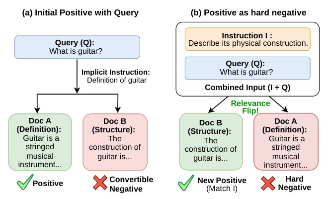
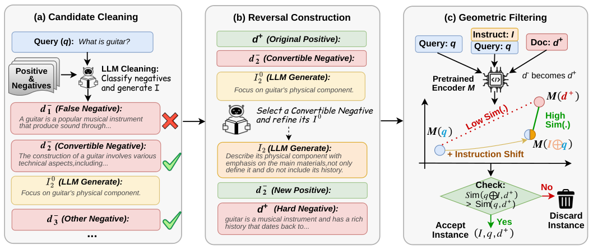

目录 · 10 节
1它到底在解决什么问题？2整体流程3设计一：先清洗，再决定谁能被扶正4设计二：原正例必须留作负例5设计三：用冻结编码器做几何过滤6数据怎么来的7主要结果8我认为它的局限9一个推荐或搜索团队可以怎么试10一句话结论带指令的检索要求同一个 query 在不同指令下排出不同结果：指令加了一条额外要求后，原来的正例如果不满足这条要求，就该往后排。这种训练数据很少，现有做法是固定正例，再让大模型编一段违反指令的负例。这篇论文反过来做：从原有负例里挑一篇满足某个额外条件的文档，生成一句短指令把它扶正，原来的正例在这句指令下自然成了最难的负例。在 MS MARCO 上只造了 6,716 条数据，小号的 Qwen3-Embedding 训练后，在 InstructIR 上，同一 query 配上多条不同用户指令，取排得最差那次的前十名 nDCG，这个分数从 49.29 升到 67.06，超过大十倍以上的 Promptriever。
想让向量检索听懂用户附加条件的团队值得读这篇，因为它把造数据的成本压到很低：大模型只写一句指令，不写整段文档，正负例都是语料里真实存在的段落，一张 RTX 3090 就能训完。同样的模型、同样多的数据、同样的训练轮数下，换成 Promptriever 式数据只到 51.84，换成 InF-IR 式数据反而掉到 31.51，差距来自数据构造方式本身。需要留意的是，它只在 MS MARCO 上造过数据，最大只试到 4B 的模型；FollowIR 上的提升明显小于 InstructIR，平均分 23.7，仍比最好的商用接口低 1.6 分。
它到底在解决什么问题？
普通向量检索只看 query 和文档像不像。用户如果在 query 后面加一句“只要讲构造的”“不要讲历史的”，模型往往照旧按主题相似度排，指令形同虚设。要教会模型听指令，训练数据里必须出现这样的对比：同一个 query，加了指令之后，哪篇该排前面发生了变化。
现有两类造数据方法都围绕一个固定的正例展开。
| 方法 | 做法 | 问题 |
|---|---|---|
| Promptriever | 保留原正例，生成一句指令，再让大模型写几段与 query 相关但违反指令的负例 | 大模型要写长段落，容易带上生成痕迹和幻觉 |
| InF-IR | 从“指令、query、正例段落”三元组出发，改写指令或 query，使原来的正例段落在改写后的条件下不再相关，以此作为难负例 | 负例围绕正例改写，对比方向单一 |
| NHNM | 从已有负例里找一篇可以被指令扶正的文档，原正例变成负例 | 大模型只写一句短指令 |
用一个小例子看（示意）。query 是“吉他是什么”，原正例 A 是吉他的定义，负例 B 讲吉他的构造。
| 指令 | 该排第一 | 该往后排 |
|---|---|---|
| 无 | A：吉他是一种弦乐器 | B：吉他的构造是… |
| “描述它的物理构造” | B：吉他的构造是… | A：吉他是一种弦乐器 |
A 和 query 高度相关，却不满足指令，正是最难区分的负例，而且不用生成任何段落。

整体流程
候选负例池的设计是用 BM25 给每个 query 取回一批文档、去掉标注的正例；实际构建这份数据时，直接用了 MS MARCO-W 里每个三元组自带的负例。之后分三步。
| 阶段 | 做什么 | 由谁完成 |
|---|---|---|
| 候选清洗 | 规则去掉残缺、截断、近重复段落；大模型把每篇负例分成三类：其实也答对了 query 的假负例、可以被指令扶正的可转换负例、其他负例 | 规则加大模型 |
| 反转构造 | 在所有可转换负例里选对比最清楚的一篇，把它的初始指令精简成只含必要区分条件的一句话；它成为新正例，原正例成为第一个负例 | 大模型 |
| 几何过滤 | 用训练前的冻结编码器检查：加上指令后，query 是否真的向新正例靠近 | 本地计算 |

训练目标是标准 InfoNCE，query 侧输入是指令和 query 拼在一起：。
设计一：先清洗，再决定谁能被扶正
为什么需要：BM25 取回的负例很杂。有的其实也回答了 query，是标注漏掉的正例；有的只是主题沾边，无论加什么合理的指令都不会比原正例更合适。直接对它们写指令，大模型会被迫编出和 query 矛盾的条件。
怎么做：大模型一次看完 query、原正例和全部负例，先确认原正例确实成立，再给每篇负例分类。对每篇可转换负例，它还要写一句初始指令作为可行性检查，要求保留 query 的实体、意图和答案类型，新增的条件要能在这篇负例里找到依据，并且原正例仍然相关但不满足这个条件。至少有一篇可转换负例的样本才保留。
小例子（示意）：query“吉他是什么”的三篇负例里，“吉他是一种流行乐器，靠琴弦发声”其实也答对了，判为假负例删掉；“吉他的构造涉及多种工艺”判为可转换负例，初始指令是“关注吉他的物理部件”；一篇讲某乐队巡演的判为其他负例，留作普通负例。
| 去掉的环节 | InstructIR Robustness@10 | FollowIR 平均分 | FollowIR p-MRR |
|---|---|---|---|
| 完整流程 | 67.06 | 23.7 | +4.1 |
| 不做清洗 | 60.93 | 22.3 | +0.2 |
这说明不是每篇负例都能被扶正，跳过清洗会把假负例和硬凑的指令带进训练，听指令的能力几乎退回原样。
设计二：原正例必须留作负例
为什么需要：这是整篇论文的核心。原正例和 query 本来就高度相关，模型只靠主题相似度会把它排第一；只有指令能告诉模型它该往后排。
怎么做：把选中的可转换负例改标为正例，原正例改标为第一个负例，其余清洗后的负例照旧保留；那些在新指令下同样满足条件的其他可转换负例要剔除，否则它们会变成新的假负例。
| 负例集合 | InstructIR Robustness@10 | FollowIR p-MRR |
|---|---|---|
| 含原正例 | 67.06 | +4.1 |
| 不含原正例 | 60.40 | +1.8 |
这说明增益的一大块来自原正例这个天然难负例，拿掉它，Robustness@10 掉 6.66 分，FollowIR 上对指令变化的响应减少一半以上，而 FollowIR 的普通相关性分数只从 23.7 降到 22.5。
设计三：用冻结编码器做几何过滤
为什么需要：大模型认为指令合理，不代表编码器能读懂它。如果加上指令后 query 向量反而远离新正例，这条样本会把预训练好的向量空间往奇怪的方向拉。
怎么做：用训练前的编码器 计算加指令带来的增益 ，只保留 的样本。注意它只要求方向对，不要求训练前新正例已经排在原正例前面，否则恰好会丢掉最有学习价值的样本。 Hoot 说

论文做法：增益 > 0 就保留
- 不加指令 → 新正例
- 0.52
- 加指令 → 新正例
- 0.58
- 增益
- 0.58 − 0.52 = 0.06 > 0，保留
方向对了，训练再把它推到原正例前面。
错误做法：要求已经排第一
- 加指令 → 新正例
- 0.58
- 加指令 → 原正例（示意）
- 0.65
- 差距
- 还差 0.07，删除
被删的正是训练最需要学会反转的那类样本。
示意：新正例相似度 0.52 升到 0.58，原正例相似度设为 0.65。 出处: 正文“设计三”的增益公式与示意例子；0.65 为补设的示意值
小例子（示意）：不加指令时 query 与“构造”那篇的余弦是 0.52，加上“描述它的物理构造”后升到 0.58，增益 0.06，保留；另一条样本加指令后从 0.50 降到 0.47，丢弃。
| 去掉的环节 | InstructIR Robustness@10 | FollowIR p-MRR |
|---|---|---|
| 完整流程 | 67.06 | +4.1 |
| 不做几何过滤 | 65.25 | +2.3 |
这说明训练信号主要来自反转本身，过滤只是锦上添花，但它让 FollowIR 上对指令的响应几乎翻倍。过滤用的是哪个编码器就按哪个算：Qwen3-Embedding-0.6B 删掉 754 条，4B 删掉 815 条，BGE-M3 只删 116 条。
数据怎么来的
从 MS MARCO 的 36,306 个三元组出发，经过规则清洗、大模型确认和反转，最后剩 6,716 条，只留下不到五分之一，说明大部分原始三元组里找不到能被合理指令扶正的负例。清洗和反转都用 GPT-5.1。人工随机抽查 100 条，88 条完全合格，判定标准是指令不改变 query 原意、新正例确实更合适、原正例确实成了合格的难负例、没有凭空添加条件或泄露答案。
主要结果
InstructIR 用简短的人设和意图指令，检查模型在跟随 query 专属条件时能否保持相关性。
| 模型 | 参数 | Robustness@10 | nDCG@10 |
|---|---|---|---|
| Promptriever | 7B | 63.10 | 92.10 |
| E5-Mistral | 7B | 55.42 | 86.33 |
| FollowIR-7B（cross-encoder） | 7B | 71.50 | 81.30 |
| BGE-M3 | 568M | 42.29 | 80.67 |
| BGE-M3 + NHNM | 568M | 45.84 | 84.31 |
| Qwen3-Embedding-4B | 4B | 50.63 | 84.99 |
| Qwen3-Embedding-4B + NHNM | 4B | 63.26 | 91.08 |
| Qwen3-Embedding-0.6B | 0.6B | 49.29 | 83.93 |
| Qwen3-Embedding-0.6B + NHNM | 0.6B | 67.06 | 93.12 |
这说明 0.6B 双塔模型在 Robustness@10 上拿到双塔第一，nDCG@10 全场第一；换到 BGE-M3 也有提升，但幅度小得多，说明收益和底座本身的指令理解能力有关。
公平对比更能说明问题：同一个 0.6B 底座、同样 6,716 条数据、同样训一轮，只换数据构造方式。
| 训练数据 | Robustness@10 | nDCG@10 |
|---|---|---|
| 不微调 | 49.29 | 83.93 |
| InF-IR 式 | 31.51 | 72.09 |
| Promptriever 式 | 51.84 | 86.35 |
| 直接用 MS MARCO 原三元组 | 45.40 | 81.80 |
| 只给原正例配指令 | 49.07 | 84.53 |
| NHNM | 67.06 | 93.12 |
这说明普通三元组和只围绕正例写的指令都教不会模型听指令，甚至会把预训练空间打乱；关键在于让两篇都和 query 相关的真实文档，靠指令分出先后。
FollowIR 的指令更长，来自 TREC 的主题描述。它会改写指令，让一部分原本相关的文档变得不相关，p-MRR 就比较这些文档在改写前后的排名，掉得越靠后分越高，范围从 -100 到 +100，0 表示排序完全没随指令变化。平均分是 Robust04 的 MAP、News21 的 nDCG@5 和 Core17 的 MAP 三项的平均。
0.6B 模型平均分 23.7、p-MRR +4.1，在微调过的检索模型里两项都最好，平均分比下一名高 2.8 分；4B 模型的 p-MRR 从 +3.0 升到 +7.2，说明底座越大，学到的指令响应越明显。
这说明在长指令上它同样有效，只是绝对提升比 InstructIR 小。另外，在完整 884 万段落的 MS MARCO 上，训练后模型的 Dev MRR@10 从 18.6 升到 25.2，普通检索能力没有被牺牲。
我认为它的局限
第一，数据只来自 MS MARCO 一个来源。MS MARCO 的 query 短、段落短，6,716 条够用不代表在长文档、商品或代码检索上也够用，论文最大只试到 4B 底座。
第二，FollowIR 上的提升有限。平均分 23.7 仍比最好的商用接口低 1.6 分，比 7B 的 FollowIR cross-encoder低 1.1 分，长指令、多条件的场景还需要更多验证。
第三，依赖强大模型做清洗和反转。清洗阶段要同时检查正例、给每篇负例分类、为每篇可转换负例写指令，主训练集一共消耗约 6,498 万 token，人工抽查合格率 88%，换成更小的开源模型时质量未知。
一个推荐或搜索团队可以怎么试
- 从自己的搜索日志里取 query、点击文档和同一次展示里未点击的文档，作为三元组来源。
- 用一个强大模型给未点击文档分类，找出可以被一句附加条件扶正的文档，并写出这句条件，比如“只看二手的”“要适合儿童的”。
- 把被扶正的文档标成正例，原点击文档标成第一个负例，剔除同样满足条件的其他文档。
- 用线上现有的向量模型算加条件前后 query 与新正例的相似度，只保留相似度上升的样本。
- 先用几千条在小模型上训一轮，同时在普通检索集和带筛选条件的评测集上对比，确认普通召回不掉。
- 效果成立后，再考虑把这批数据混进常规训练数据里。
一句话结论
一个思路很巧的造数据方法：不写负例，只写指令，让原正例当难负例，几千条数据就能让小模型明显学会听指令。
| 维度 | 评价 |
|---|---|
| 问题重要性 | 中高。带条件的搜索越来越常见，听指令的训练数据一直稀缺 |
| 方法创新性 | 中高。正负例反转的思路简单而新，省掉了长段落生成 |
| 实验证据 | 中高。有固定底座、固定数据量的公平对比和逐项消融；不足是只有 MS MARCO 一个数据来源 |
| 工程成本 | 低。几千条数据、一张消费级显卡；主要成本是大模型调用 |
| 是否值得尝试 | 值得，尤其是用户常给筛选条件、向量召回又不听条件的搜索场景 |
读完这篇，你觉得
夜读鸮记下了，谢谢你的反馈。
点一下即可，无需登录；再点一次撤回。只统计匿名次数，不记录你是谁。
讨论
欢迎补充实验细节、复现经验或不同看法。需 GitHub 登录。
正在加载讨论…